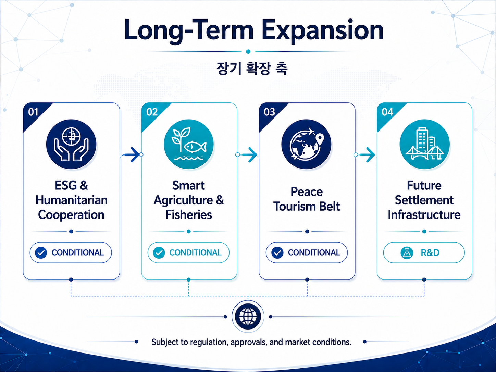
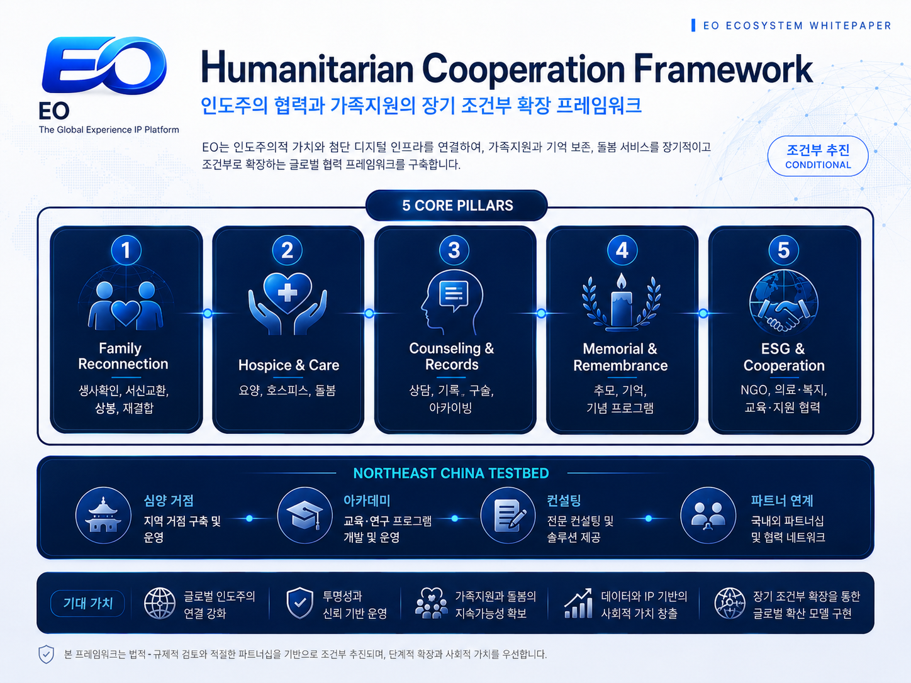

Long-Term Expansion Portfolio
PUBLIC RELEASELong-Term Expansion Portfolio

도표 7. Long-Term Expansion Portfolio
| 사업영역 | 상태 | 백서 포지션 |
|---|---|---|
| ESG & Humanitarian Cooperation | CONDITIONAL | 의료·식품·아동·가족 서비스 등 인도주의형 협력 |
| Smart Agriculture & Fisheries | CONDITIONAL | 스마트 온실·종자·양식·저장·가공 등 기술협력 |
| Korean Peninsula Peace Tourism Belt | CONDITIONAL | 관광 콘텐츠 → 상품 → 인프라 → 네트워크 |
| China Northeast Testbed | CONDITIONAL | 심양·동북지역을 사업 실증·파트너십 검토 거점으로 연구 |
| Future Settlement Infrastructure | R&D | EO와 분리된 허가형 정산·스테이블 구조 연구 |
ESG & Humanitarian Cooperation
보건·의료, 식품·영양, 아동·청소년 지원, 이산가족의 요양·상봉·기록·추모·상담 등 인도주의형 서비스를 검토합니다. 의약품 지원과 지속가능 무역을 연결하는 글로벌 모델은 ESG 확장 사례로 참고하되, 구체적인 기부·판매 비율은 백서에서 확정하지 않습니다.
Separated Families & Humanitarian Services — CONDITIONAL
이산가족 관련 과제는 생사확인, 서신교환, 상봉, 재결합, 법률·행정 상담 등 복합적인 가족·인도주의 문제로 접근합니다. EO 생태계는 이 가운데 인도주의적 가치와 콘텐츠·커뮤니티 연계성이 높은 요소를 조건부 서비스 프레임으로 검토합니다.

도표 11. Humanitarian Cooperation Framework
| 서비스 축 | 공개 백서 반영 범위 | 주요 전제 |
|---|---|---|
| Reunion Support | 생사확인·연락·상봉 기회 등 가족 연결 지원 개념 | 남북교류 규정, 개인정보, 출입국, 정부 승인 |
| Care & Hospice Support | 고령 이산가족의 요양·호스피스 지향 돌봄과 가족 만남 지원 | 의료 인허가, 현지법, 보호자 동의, 제재 검토 |
| Counseling & Community | 정서 상담, 가족지원, 커뮤니티 케어 | 전문 인력, 개인정보·의료정보 보호 |
| Memory Archive | 구술기록, 생애사, 사진·영상·기억 아카이브 | 저작권, 초상권, 개인정보 동의 |
| Memorial & Legacy | 추모·기억·가족사 기록 등 비금융적 레거시 서비스 | 장묘·유해 이전 등은 별도 법률·행정 검토 |
| Legal Referral | 상속·재산·가족관계 관련 합법적 상담·전문가 연계 가능성 | EO가 송금·상속이전·투자를 중개하지 않음 |
Third-Country Pilot Concept
심양·단동 등 중국 동북지역은 제3국 기반 가족지원·요양·상봉 지원의 후보 지역 중 하나로 검토할 수 있습니다. 다만 특정 지역을 유일한 대안으로 전제하지 않으며, 법률·의료·출입국·대북제재·파트너 조건이 충족되는 경우에만 동북아 인도주의 파일럿을 검토합니다.
Excluded Commercial Mechanics
구체적인 월 이용료, 호스피스 수익 추정, 유산상속 성공보수, 대규모 상속·투자 효과, 송금 구조, 장묘 관련 수익배분 등은 공개 백서의 실행모델이나 수익전망으로 채택하지 않습니다. 이러한 요소는 법률·제재·외환·의료·장묘 규제 검토 없이 사업화 전제로 사용할 수 없습니다.
Smart Agriculture, Testbed & Global Content
Smart Agriculture & Fisheries — CONDITIONAL
스마트 온실, 종자·육묘, 농업용수, 저장·유통, 양식, 사료, 수질관리, 냉장·냉동 및 농수산물 가공 등 기술협력 가능성을 검토합니다. 초기에는 실제 대규모 개발보다 관련 콘텐츠·데이터·B2B 정보와 소규모 실증 가능성 연구에 집중합니다.
China Northeast Testbed — CONDITIONAL
중국 동북지역·심양 권역을 한반도 관련 커머스·관광·B2B 사업의 실증·파트너십 검토 거점으로 활용할 가능성을 Long-Term Expansion의 하위 전략으로 유지합니다. 노동·제재·외환·통관·세무·기업법 등 사전 검토를 전제로 합니다.
Inter-Korean Cooperation Education & Advisory — CONDITIONAL
심양을 포함한 동북아 지역의 교육·리서치·컨설팅 구상은 기업·기관을 대상으로 한 한반도 경제·산업·규제 정보, 전문가 교육 및 B2B 네트워킹 모델로 한정해 검토합니다. 직접 투자주선이나 대북 거래 중개는 본 백서의 확정 사업범위에 포함하지 않습니다.
실무형 한반도 경제·산업 교육 프로그램 및 세미나
중국 동북지역·한반도 관련 시장·정책·법률 리서치
기업·전문가·기관 간 합법적 정보교류 및 파트너 네트워킹
실제 투자·거래·합영 구조는 별도 법률검토와 승인 없이는 실행하지 않음
Global Humanitarian Documentary IP — PLANNED
한반도의 역사·인도주의·평화를 소재로 글로벌 다큐멘터리와 프리미엄 콘텐츠 IP로 확장하는 전략을 검토합니다. 특정 OTT 투자, 제작비, 독점취재권 또는 MOU가 확정된 것으로 표현하지 않고, 국제적 공감대가 큰 인도주의 콘텐츠 IP 개발 가능성으로만 반영합니다.
Future Settlement Infrastructure — R&D
EO Token은 끝까지 커머스·콘텐츠·Experience·정보서비스의 유틸리티 토큰으로 유지합니다. 장기적인 남북 경제협력, B2B 거래, 관광·서비스 정산을 위한 금융 인프라는 EO Token과 분리된 별도 허가형 결제·정산 구조로 연구합니다.
별도 스테이블 토큰 또는 허가형 디지털 자산 모델 가능성 연구
금융기관·정부·규제기관·결제사업자와 협력 가능성 검토
외환·결제·KYC/AML·대북제재·세무·법인 구조 검토
EO Token과 별도 정산 토큰 간 서비스 연계 가능성만 장기 연구
현 단계에서 준비금·담보·발행국가·정산 메커니즘은 확정하지 않음